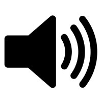

<!-- 	This Program is developed on jsPsych library by Lisa Sullivan
		Some elements were developed by Hyoung Seok Kwon & Na-Young Ryu 
        Modified by Justine Hui 2024--> 
<!-- Development period: from Oct 26, 2017 to May, 2020, updated to version 7 in 2024 --> 
<!-- library location: jspsych/ -->
<!-- PHP file: save_data.php --> 
<!-- result file location and format: data/time_result.csv -->
<!-- jsPsych.currentTimelineNodeID bug: cann't get activeID when it is called in jsPsych.init.-->
<!-- Warning: if you provide an array that has very few valid permutations with no neighboring elements, 
     then this method will fail and cause the browser to hang. -->
<!-- AQ Reference: 	Baron-Cohen, S., Wheelwright, S., Skinner, R., Martin, J., & Clubley, 
					E. (2001). The autism-spectrum quotient (AQ): Evidence from asperger 
					syndrome/high-functioning autism, malesand females, scientists and 
					mathematicians. Journal of autism and developmental disorders, 31(1), 
					5-17.
-->
 
<!DOCTYPE html>
<html>
<head> 
    <meta charset="UTF-8"> 
    <!-- Specify the title of your experiment here. This appears in the browser tab for the user -->
    <title>Listening test</title> 
    <!-- 	this loads jquery and the main jspsych files. Do not remove (updates to more recent 
    		versions may cause issues)
    -->
    <script src="jquery/jquery-3.2.1.min.js"></script> 
    <script src="jspsych/jspsych.js"></script> 
    <!-- Load your plugins here -->
    <script src="jspsych/plugin-instructions.js"></script> 
    <script src="jspsych/plugin-survey-text.js"></script> 
    <script src="jspsych/plugin-survey-multi-choice.js"></script> 
    <script src="jspsych/plugin-survey-likert.js"></script> 
    <script src="jspsych/plugin-survey-html-form.js"></script> 
    <script src="jspsych/plugin-audio-keyboard-response.js"></script> 
    <script src="jspsych/plugin-categorize-html.js"></script>
    <script src="jspsych/plugin-html-button-response.js"></script>
    <script src="jspsych/plugin-preload.js"></script>
    <!-- Loads the css file with the standard formatting -->
    <link href="jspsych/jspsych.css" rel="stylesheet" type="text/css"></link>
    
    <!-- Custom CSS to make the experiment look nice -->
    <style type="text/css">
    	.jspsych-btn{margin: 15px;}
    	.jspsych-content-wrapper{width: 80%;}
    	.jspsych-content-wrapper p, h3, ol {text-align: left;}
    	.jspsych-content-wrapper .btn_resp_p, .jspsych-content-wrapper label{text-align: left;}
        .jspsych-content-wrapper .jspsych-survey-multi-choice-horizontal .jspsych-survey-multi-choice-text{text-align: left;font-weight: bold;}
    	.jspsych-content-wrapper .jspsych-survey-multi-choice-option .jspsych-survey-multi-choice-text{font-weight: normal;}
    	.jspsych-survey-multi-choice-option input[type="radio"]{height: 20px; width: 20px; margin-bottom: 1em;}
        .jspsych-content-wrapper .jspsych-survey-text-question {text-align: left;}
    	.jspsych-survey-multi-choice-option .jspsych-survey-multi-choice-text{font-weight: normal;}

        .jspsych-content{width: 100%;}
        
    	.snd-btn {
			display: inline-block;
  			padding: 6px 12px;
  			margin: 4px;
  			background: #fff;
  			cursor: pointer;
  			text-align: center;
  			white-space: nowrap;
  			vertical-align: middle;
  			border: 1px solid transparent;
  			border-radius: 4px;
  			border-color: #ccc;
		}

        .city {
            padding: 0px 15px;
            margin: 4px;
        }

		.snd-btn:hover {
  			box-shadow: 0 0px 8px 0 rgba(0,0,0,0.48), 0 0px 25px 0 rgba(0,0,0,0.38);
		}
		
		.snd-btn:active {
			transform: translate(2px,2px);
			box-shadow: 0 0px 8px 0 rgba(0,0,0,0.24), 0 0px 25px 0 rgba(0,0,0,0.19);
		}
		
		/* Modify height and width here to adjust the size of the buttons */
		.jspsych-html-button-response-button .jspsych-btn{font-size: 150%;width: 5em;height:3em;}
        
    </style>

</head>
<body> 
    


    <div id="jspsych-target">    

    </div>

</body>


<script>
/*********************************************************************************/
/****************************** Global Variables *********************************/
/*********************************************************************************/

inst = ''; // Variable for storing the instructions
hVt_words=[]; // Variable for storing the input data (csv)
kVkV_words=[];
noOfRepetitions = 3; // will be multiplied by 2
//stimuli_continuum = [1, 2, 3, 4, 5, 6, 7, 8, 9, 10];
stimuli_continuum = [1, 2, 3, 4, 5, 6, 7, 8, 9, 10];
practice_continuum = [1, 10]; 
consent = '';
participantID = '';
localSave = 0;

/**
//Set the image file path 
const a1 = 'img/' + currentWord.option_1 + '.png';
        const image1 = document.getElementById("image_1");
        image1.src = a1;

    const a2 = 'img/' + currentWord.option_2 + '.png';
        const image2 = document.getElementById("image_2");
        image2.src = a2; **/
/*********************************************************************************/
/****************************** Reading file data ********************************/
/*********************************************************************************/
/** This reads the consent_1.txt file and stores it in a variable called consent **/
$.ajax({
    type: "GET", 
    async: false, 
    url: "stimuli/consent_1.txt", 
    dataType: "text", 
    success: function(txt) {consent=txtJSON(txt);}
});

/** This reads in the text in fcnf_instructions.txt and stores it in a variable called
	'inst'.
**/
$.ajax({
    type: "GET", 
    async: false, 
    url: "stimuli/fcnf_instructions.txt", 
    dataType: "text", 
    success: function(txt) {inst=txtJSON(txt);}
});


/** This reads in the data for the experiment from in fcnf_stimuli.csv and stores it in 
	a variable called 'fcnf_stimuli'.
**/
$.ajax({
    type: "GET", 
    async: false, 
    url: "stimuli/kVkV_stimuli.csv", 
    dataType: "text", 
    success: function(csv) {kVkV_words=csvJSON(csv)}
});


/*********************************************************************************/
/****************************** Initialising jsPsych *****************************/
/*********************************************************************************/
var jsPsych = initJsPsych({
    
    show_progress_bar: true, 
    default_iti : 300,
    on_data_update: function(data) {
        data = jsPsych.data.get(); //updates the data file with the most recent trial 
    },
    on_close: function(){
        var data = jsPsych.data.get();  // updates the data file with the most recent trial
        identificationData = jsPsych.data.get().filter([{phase: "practice"}, {phase:"iden_exp"}]);  // only getting response phases
        identificationData = identificationData.ignore(['internal_node_id', 'trial_type']);  // ignoring internal node id
        //identificationData = identificationData.ignore('trial_type');  // ignoring trial_type
        if (localSave == 0 ) {
            identificationData.localSave('csv','longShortVowelIden_onClose_' + participantID + '.csv'); //save locally
        }
        
    },
    on_finish:  function(data) {
        data = jsPsych.data.get();  // updates the data file with the most recent trial

        identificationData = jsPsych.data.get().filter([{phase: "practice"}, {phase:"iden_exp"}]);  // only getting response phases
        identificationData = identificationData.ignore(['internal_node_id', 'trial_type']);  // ignoring internal node id
        //identificationData = identificationData.ignore('trial_type');  // ignoring trial_type
        identificationData.localSave('csv','longShortVowelIden_complete_' + participantID + '.csv'); //save locally
        localSave = 1;
        practiceData = identificationData.filter({phase:"practice"});
        // submitData(practiceData.csv());  // saves the data to  google form
        // for(var i=0; i<hVt_words.length; i++){
        //     responseData = identificationData.filter({phase:"iden_exp", word: hVt_words[i].word}).first(30); //bad hardcoded!
        //     submitData(responseData.csv());  // saves the data to  google form
        //     responseData = identificationData.filter({phase:"iden_exp", word: hVt_words[i].word}).last(30);
        //     submitData(responseData.csv());  // saves the data to  google form
        // }
        finish(); //prints the message you saved in the finish() function above
    }
  
});

participantID = jsPsych.randomization.randomID(8);
jsPsych.data.addProperties({participantID: participantID}); //add participant ID

/*********************************************************************************/
/****************************** Preloading media *********************************/
/*********************************************************************************/
// the "auto_preload: true" setting tells the plugin to automatically find 
// stimuli to preload based the main experiment timeline (used in jsPsych.run)
var preload = {
    type: jsPsychPreload,
    auto_preload: true,
    show_detailed_errors: true
}

/*********************************************************************************/
/******************************** Consent block **********************************/
/*********************************************************************************/

/** modify the text in consent_1.txt. Use HTML including <p> tags for paragraphs **/


/** This creates the consent block. Make sure you have the instructions plugin loaded
	and push the block to the timeline at the bottom of the file.
	[consent] loads the consent form
**/
var consent_block = {
    type: jsPsychInstructions, 
    pages: [consent], 
    show_clickable_nav: true
};

/**********************************************************************************/
/******************** Define sound check/activation block *************************/
/**********************************************************************************/
    
/** Sound Check: This allows the participant to check that their sound is working & is at 
	an appropriate volume
	It also makes the experiment work in Google Chrome and other web browsers that don't 
	allow auto-loading of sound without the user manually playing the sound first
**/
var sound_test = {
    	type: jsPsychInstructions, 
    	pages: [ '<audio id="testAudio"><source src="sound/tone200Hz_82dB_plus6dBFromMeanSegment.wav" type="audio/wav"></audio><h1>Sound Test</h1><p style="text-align: center;">Please test your sound by clicking the button below. You may click it multiple times to adjust your volume so you can hear it clearly.</p><button onclick="playSound()" type="button" class="snd-btn"></button>' ], 
    	show_clickable_nav: true,
    	button_label: "Next",
};

/*************************************************************************************/
/******************************** Instruction block **********************************/
/*************************************************************************************/

/**	Loads the instructions
	To modify instructions, modify fcnf_instructions.txt using full HTML (including <p>
	tags)
	Push this block to the timeline below
**/
var fcnf_instructions_block = {
    type: jsPsychInstructions, 
    pages: [inst], 
    show_clickable_nav: true
};

var fcnf_instructionsAfterPractice_block = {
    type: jsPsychInstructions, 
    pages: [
    '<p style="text-align: center;">The practice session has finished. Please click Next to continue to the experiment. Remember that the position of the buttons may swap during the test and you will only hear the word once. <\p>',
    ],
    button_label_next: "Next",
    show_clickable_nav: true,
    on_finish:  function(data) {
                data = jsPsych.data.get();  // updates the data file with the most recent trial

                practiceData = jsPsych.data.get().filter([{phase: "practice"}]);  // only getting response phases
                practiceData = practiceData.ignore(['internal_node_id', 'trial_type']);  // ignoring internal node id

                //submitData(practiceData.csv());  // saves the data to  google form
            }
}

var fcnf_instructionsBeforeSurvey_block = {
    type: jsPsychInstructions, 
    pages: [
    '<p style="text-align: center;">The experiment has finished. You can download the response file and click Next. Please wait until the next screen appears before closing your browser.<\p>',
    ],
    button_label_next: "Next",
    show_clickable_nav: true
}


/*********************************************************************************/
/*************************** Define experiment block *******************************/
/*********************************************************************************/


/** This randomizes the stimuli in fcnf_stimuli and stores them in a variable called
	'fcnf_trials'.
	It also defines how many repetitions of the stimuli there are. If you want more than 
	one repetition, change 1 to however many repetitions you want.

**/

fcnf_words = jsPsych.randomization.shuffle(kVkV_words);

/** This creates the variable that all the trials will be stored in. To run the task,
	push this to the timeline
**/
var fcnf_block = [];
var totalSet = fcnf_words.length;
/** This creates the main task. It loops through each item in fcnf_trials creating an
	audio event to play each sound, followed by a 2 alternative forced choice
	question in which the participants indicate which word they heard
	
	trial_duration determines the time from the onset of the audio until the
	identification task is presented to the listener

    3 loops: randomise within 10-step continuum, swapping button locations, randomise of number of keywords
    three loops: first loop over contiuum (randomised), second loop: alternate button and repeat, third loop: over words
**/
for(var i=0; i<fcnf_words.length; i++){
    currentSetNo = i + 1;
    currentWord = fcnf_words[i];
    fcnf_block.push(
        {
            type: jsPsychInstructions, 
            pages: [ '<h1>Set ' + currentSetNo + '</h1><p style="text-align: center;">There are '+ totalSet + ' in total. Please click NEXT to proceed, take a break if you need to. </p>' ], 
            show_clickable_nav: true,
            button_label: "Next",
        }
    );
    for (var j=0; j<noOfRepetitions; j++){
        fcnf_trials = jsPsych.randomization.shuffle(stimuli_continuum);
        block = j+1;
        for (var k=0; k<fcnf_trials.length; k++){
                /**	Plays the sound **/
                fcnf_block.push(
                    {
                        type: jsPsychAudioKeyboardResponse, 
                        stimulus: 'sound/'+ currentWord.sound+'_'+ fcnf_trials[k] + '.wav', 
                        prompt: '', 
                        choices: "NO_KEYS", 
                        trial_duration: 1500, 
                    }
                );
                fcnf_block.push(
                    {
                        type: jsPsychHtmlButtonResponse, 
                        stimulus: '<h1>What word did you hear?</h1>', 
                        choices: [currentWord.textOption_1,currentWord.textOption_2],
                        //choices: [
                        //'<p class="city">' + currentWord.textOption_1 + '</p>',
                        //'<p class="city">' + currentWord.textOption_2 + '</p>'
                        //], 
                        data: {phase: 'iden_exp', 
                                word: currentWord.word, 
                                block: block,
                                stimulus: fcnf_trials[k], 
                                option_0: currentWord.option_1, 
                                option_1: currentWord.option_2, 
                                //sound: currentWord.sound
                            },
                        on_finish: function(data){
                            var answer = "";
                                if(data.response == 0){
                                    answer = data.option_0;
                                }else if(data.response == 1){
                                    answer = data.option_1;
                                };
                            jsPsych.data.addDataToLastTrial({answer: answer});  
                        } 
                    }
                );
            };
        };
    // swapping button locations every set
    fcnf_block.push(
        {
            type: jsPsychInstructions, 
            pages: [ '<p style="text-align: center;">The buttons are now swapped. Please click NEXT to proceed, take a break if you need to. </p>' ], 
            show_clickable_nav: true,
            button_label: "Next",
        }
    );
    for (var j=0; j<noOfRepetitions; j++){
        fcnf_trials = jsPsych.randomization.shuffle(stimuli_continuum);
        block = j + 4;
        for (var k=0; k<fcnf_trials.length; k++){
                /**	Plays the sound **/
                fcnf_block.push(
                    {
                        type: jsPsychAudioKeyboardResponse, 
                        stimulus: 'sound/'+ currentWord.sound+'_'+ fcnf_trials[k] + '.wav', 
                        prompt: '', 
                        choices: "NO_KEYS", 
                        trial_duration: 1500, 
                    }
                );
                fcnf_block.push(
                    {
                        type: jsPsychHtmlButtonResponse, 
                        stimulus: '<h1>What word did you hear?</h1>', 
                        choices: [currentWord.textOption_2,currentWord.textOption_1],
                        //choices: [
                        //'<p class="city">' + currentWord.textOption_2 + '</p>',
                        //'<p class="city">' + currentWord.textOption_1 + '</p>'
                        //], 
                        data: {phase: 'iden_exp', 
                                word: currentWord.word, 
                                block: block,
                                stimulus: fcnf_trials[k], 
                                option_0: currentWord.option_1,
                                option_1: currentWord.option_2, 
                                //sound: currentWord.sound
                            },
                        on_finish: function(data){
                            var answer = "";
                                if(data.response == 0){
                                    answer = data.option_1;
                                }else if(data.response == 1){
                                    answer = data.option_0;
                                };
                            jsPsych.data.addDataToLastTrial({answer: answer});  
                        } 
                    }
                );
        };
    };
}

/*********************************************************************************/
/*************************** Define practice block *******************************/
/*********************************************************************************/
var practice_block = [];
practice_block.push(
        {
            type: jsPsychInstructions, 
            pages: [ '<h1>Let us practice! </h1><br/><p style="text-align: center;">There are '+ totalSet + ' in total. You will need to click on the word that you heard. Please click Next to proceed. </p>' ], 
            show_clickable_nav: true,
            button_label: "Next",
        }
);

for(var i=0; i<kVkV_words.length; i++){
    currentWord = kVkV_words[i];
    
    for (var k=0; k<practice_continuum.length; k++){
            /**	Plays the sound **/
            practice_block.push(
                {
                    type: jsPsychAudioKeyboardResponse, 
                    stimulus: 'sound/'+ currentWord.sound+'_'+ practice_continuum[k] + '.wav', 
                    prompt: '', 
                    choices: "NO_KEYS", 
                    trial_duration: 1500, 
                }
            );
            practice_block.push(
                {
                    type: jsPsychHtmlButtonResponse, 
                    stimulus: '<h1>What word did you hear?</h1>',
                    choices: [currentWord.textOption_1,currentWord.textOption_2],
                    //choices: [
                    //    '<p class="city">' + currentWord.textOption_1 + '</p>',
                    //    '<p class="city">' + currentWord.textOption_2 + '</p>'
                    //],
                    data: {phase: 'practice', 
                            word: currentWord.word, 
                            stimulus: practice_continuum[k], 
                            option_0: currentWord.option_1,
                            option_1: currentWord.option_2, 
                            //sound: currentWord.sound
                        },
                    on_finish: function(data){
                        var answer = "";
                            if(data.response == 0){
                                answer = data.option_0;
                            }else if(data.response == 1){
                                answer = data.option_1;
                            };
                        jsPsych.data.addDataToLastTrial({answer: answer});  
                    } 
                }
            );
        };
}

/*******************************************************************************/
/******************** Define demographic questionnaire *************************/
/*******************************************************************************/
// var hearing_scale = ["Yes", "No", "Not sure"];
// var sex_scale = ["Female", "Male", "Gender diverse", "Prefer not to answer"];
    
// var demographics_form = {
//     type: 'survey-multi-choice',
//     preamble: "<h1>Demographic Questionnaire</h1>",
//     questions: [{prompt: "Sex", options: sex_scale, horizontal: true, name: 'sex', required: true},
//                 {prompt: "Do you experience any hearing loss? ", options: hearing_scale, horizontal: true, name: 'hearingLoss', required: true}],
//     button_label: "Next",
//     on_finish: function(data){
//     var responses = JSON.parse(data.responses); 
//     jsPsych.data.addProperties({sex: responses.sex,  hearingLoss: responses.hearingLoss}); 
//     $('html,body').scrollTop(0);
//     }
// };
    
// var demographicsText_form = {
//     type: 'survey-text',
//     preamble: "<h1>Demographic Questionnaire</h1>",
//     questions: [{prompt: "Age:", rows: 1, columns: 10},
//                 {prompt: "Iwi/hapū (if applicable)", rows: 2, columns: 30},
//                 {prompt: "Ethnicity", rows: 2, columns: 30},
//                 {prompt: "Occupation", rows: 2, columns: 30},
//                 {prompt: "What is your highest level of education", rows: 2, columns: 30}
//                 ],
//     button_label: "Next",
//     on_finish: function(data){
//         var responses = JSON.parse(data.responses); 
//         jsPsych.data.addProperties({age: responses.Q0, iwi: responses.Q1, ethinicity: responses.Q2, occupation: responses.Q3, education: responses.Q4}); 
//         $('html,body').scrollTop(0);
//     }
// };
// /**	demographics 2 includes text responses
// 	This includes both short and long responses
// 	to create a long response, increase the number of rows
	
// 	Note: text responses cannot be required automatically. See my script on participant 
// 	ID (lisasullivan.ca/scripts) for a method of requiring text fields be filled in
// **/
    
// var language_form = {
//     type: 'survey-text',
//     preamble: "<h1>Language related questions</h1>",
//     questions: [{prompt: "Please list any languages you speak, and your level of proficiency (beginner, intermediate, advanced, native-like or native)", rows: 5, columns: 80},
//                 {prompt: "Were you born in New Zealand? If not, at what age did you arrive?", rows: 2, columns: 80},
//                 {prompt: "What country/countries did you spend the majority of your childhood in (up to 18 years old)?", rows: 2, columns: 80},
//                 {prompt: "Did you do your schooling in New Zealand? If so, please specify whether it is primary school, intermediate, high school, tertiary education. ", rows: 5, columns: 80},
//                 {prompt: "Please list your te reo Māori learning experiences, e.g., beginner's course, primary school, high school, university courses, kura/immersion schools, from whānau.", rows: 5, columns: 80},
//                 {prompt: "Do your whānau speak te reo Māori? e.g., parents, siblings, grandparents, please specify. ", rows: 5, columns: 80}],
//     button_label: "Next",
//     on_finish: function(data){
//         var responses = JSON.parse(data.responses); 
//         jsPsych.data.addProperties({languages: responses.Q0, nzBorn: responses.Q1, residentCountry: responses.Q2, schoolingLocation: responses.Q3, trmExperience: responses.Q4, trmFamily: responses.Q5}); 
//         $('html,body').scrollTop(0);
//     }
// };
    
// /**	demographics 3 includes scale responses
// 	This questionnaire is modelled after Chambers & Lapierre's (2011) Language Use Index
// 	(LUI)
	
// 	Elements can be modified in the same way as in demographics_1
	
// 	Note: scale responses can be required by adding "required: true" to the question
// 	prompt. Change to required: false, or remove to make questions optional
// **/

//     var lui_scale = ["Always", "Sometimes", "Seldom", "Never"];

//     var languageUseIndex_form = {
//        type: 'survey-likert',
//        preamble: "<h1>Language Use Index - te reo Māori</h1><h2>How often do you use te reo Māori in the following ways?</h2>",
//        questions: [	{prompt: "At home", labels: lui_scale, required: true},
//        				{prompt: "At work or school", labels: lui_scale, required: true},
//        				{prompt: "With your friends", labels: lui_scale, required: true},
//        				{prompt: "With your whānau", labels: lui_scale, required: true},
//        				{prompt: "In the media", labels: lui_scale, required: true}],
//        button_label: "Next",
//        on_finish: function(data){
//         var responses = JSON.parse(data.responses); 
//         jsPsych.data.addProperties({LUI_home: responses.Q0, LUI_work: responses.Q1, LUI_friends: responses.Q2, LUI_scale: responses.Q3, LUI_media: responses.Q4}); 
//         $('html,body').scrollTop(0);
//        }
//     };

/*********************************************************************************/
/************************** User defined functions *******************************/
/*********************************************************************************/

/**	This reads .txt  files and stores them in a variable **/
function txtJSON(txt){
    var text = ''; 
    var lines = txt.split('\n'); 
    for (var i=0 ; i<lines.length ; i++) {
        text = text + lines[i]; 
    } 
    return text;
};

/**	This reads .csv  files and stores them in a variable **/
//var csv is the CSV file with headers
function csvJSON(csv){
    var lines=csv.split(/\r\n|\n/); 
    var result = []; 
    var headers=lines[0].split(','); 
    var headers=lines[0].split(','); 
    var headers=lines[0].split(','); 

    for(var i=1;i<(lines.length);i++){
        var obj = {}; 
        var currentline=lines[i].split(','); 
        for(var j=0;j<headers.length;j++){
            obj[headers[j]] = currentline[j]; 
        } 
        result.push(obj); 
    } 
    return result; //JavaScript object
  //return JSON.stringify(result); //JSON
};

/* save data function */
function submitData(filedata){
    
    var resultsEscaped = encodeURIComponent(filedata);
    $.ajax({
    type: "GET", 
    async: false, 
    url: "https://docs.google.com/forms/d/e/1FAIpQLSfyeHDFTJZ8_DyaR2wemgpSxAOwQl1ZUsr-guh-O794Ax3DMQ/formResponse?&submit=Submit?usp=pp_url&entry.366340186=" + resultsEscaped,
    // Justine: https://docs.google.com/forms/d/e/1FAIpQLSdUtwhzs44o_AvYoaKjByelgYc996tj3ldHLjPudrzxlkxKAg/formResponse?&submit=Submit?usp=pp_url&entry.231415358=
    //  Jenice: https://docs.google.com/forms/d/e/1FAIpQLSfyeHDFTJZ8_DyaR2wemgpSxAOwQl1ZUsr-guh-O794Ax3DMQ/viewform?usp=pp_url
    // entry id = 366340186
    dataType: "text"
    });
}

function saveData(filename, filedata){
    $.ajax({
        type:'post', 
        cache: false, 
        url: 'save_data.php', // this is the path to the above PHP script 
        data: {filename: filename, filedata: filedata} 
    });
};

/**	This function plays the sound in the sound check **/
function playSound(){
	var x = document.getElementById("testAudio");
	x.play();
}

/* Function to chnage file path for image */
function changeImage(){
    var imgPath_1 = 'img/' + currentWord.textOption_1 + '.png';
    var x = document.getElementById("wordImage_1");
    x.src = imgPath_1;

    var imgPath_2 = 'img/' + currentWord.textOption_2 + '.png';
    var y = document.getElementById("wordImage_2");
    y.src = imgPath_2;
}

/**
    if (word == "kaka" || "kakā"){
        button_img1.src = "img/kaka.png";
        button_img2.src = "img/kakā.png";
    } else if(word == "keke" || "kekē"){
        button_img1.src = "img/keke.png";
        button_img2.src = "img/kekē.png";
    }else if(word == "koko" || "kokō"){
        button_img1.src = "img/koko.png";
        button_img2.src = "img/kokō.png";
    }
}

const a1 = 'img/' + currentWord.option_1 + '.png';
        const image1 = document.getElementById("image_1");
        image1.src = a1;**/

/* time stamp function, format YYYYMMDDhhmmss*/
function stamp(){
    var dt = new Date(); 
    var year = dt.getFullYear(); 
    var month = ((dt.getMonth()+1)<10?'0':'') + (dt.getMonth()+1); 
    var day = (dt.getDate()<10?'0':'') + dt.getDate(); 
    var hour = (dt.getHours()<10?'0':'') + dt.getHours(); 
    var minute = (dt.getMinutes()<10?'0':'') + dt.getMinutes(); 
    var second = (dt.getSeconds()<10?'0':'') + dt.getSeconds(); 
    var stamp = year +''+ month +''+ day +''+ hour +''+ minute +''+ second ; 
    return stamp;
};

/** This function is called when the experiment finishes. Add a thank you message, 
	debriefing or direct participants somewhere else (e.g. back to prolific or mturk) 
**/
function finish() {
    DOM_target = document.querySelector('#jspsych-content'); 
    linkToPrefilledGoogleForm = 'https://docs.google.com/forms/d/e/1FAIpQLSc1aX3wS_am6_2Ny514yX9tQesllDFFsXjhkaBn627dTl0pbA/viewform?usp=pp_url&entry.1797296953=' + participantID;
    //                  Justine: https://docs.google.com/forms/d/e/1FAIpQLSeZkgvLJtpdoHSYwz_UbGytqLV7XEEZlAKpC2rZfo67g2RLDw/viewform?usp=pp_url&entry.1797296953=
    //                   Jenice: https://docs.google.com/forms/d/e/1FAIpQLSc1aX3wS_am6_2Ny514yX9tQesllDFFsXjhkaBn627dTl0pbA/viewform?usp=pp_url&entry.1797296953=
    //linkToPrefillQualtrics = 'https://auckland.au1.qualtrics.com/jfe/form/SV_aVjg6I7NFM7akxU?Q_PopulateResponse={%22QID1%22:%22' + participantID + "%22}";
    DOM_target.innerHTML ='<p style="text-align: center;">This is the end of the listening task. Thank you very much for your participation! </p><br/>\
    <p style="text-align: center;">Please click <a href="' + linkToPrefilledGoogleForm + '",target="_blank">here</a> to proceed to the demographics survey. </p>' ; 
    jsPsych.pluginAPI.cancelAllKeyboardResponses(); 
    jsPsych.pluginAPI.clearAllTimeouts();
}; 

/*********************************************************************************/
/******************** Make timeline like flow in Psychopy ************************/
/*********************************************************************************/

/** This creates a variable for the timeline **/
var timeline = [];

/**	List your blocks here in the order you want them to appear
	follow the same format as for the current blocks.
**/
timeline = timeline.concat(preload);
timeline = timeline.concat(consent_block);
timeline = timeline.concat(sound_test);
timeline = timeline.concat(fcnf_instructions_block);
timeline = timeline.concat(practice_block);
timeline = timeline.concat(fcnf_instructionsAfterPractice_block);
timeline = timeline.concat(fcnf_block);
timeline = timeline.concat(fcnf_instructionsBeforeSurvey_block);
// timeline = timeline.concat(demographics_form);
// timeline = timeline.concat(demographicsText_form);
// timeline = timeline.concat(language_form);
// timeline = timeline.concat(languageUseIndex_form);

/*********************************************************************************/
/******************************** Run jsPsych ************************************/
/*********************************************************************************/

/** This code initiates the experiment and specifies what happens
		- After each trial (on_data_update)
		- At the end of the experiment
**/


jsPsych.run(timeline);
//jsPsych.simulate(timeline);

</script>
</html>